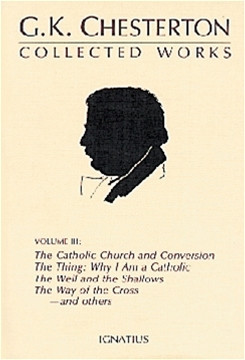
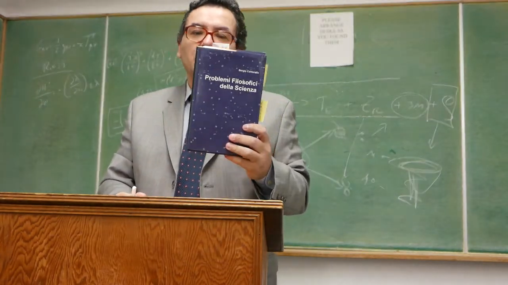
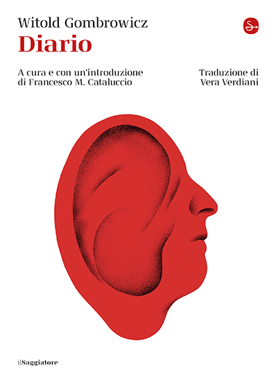
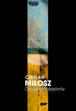
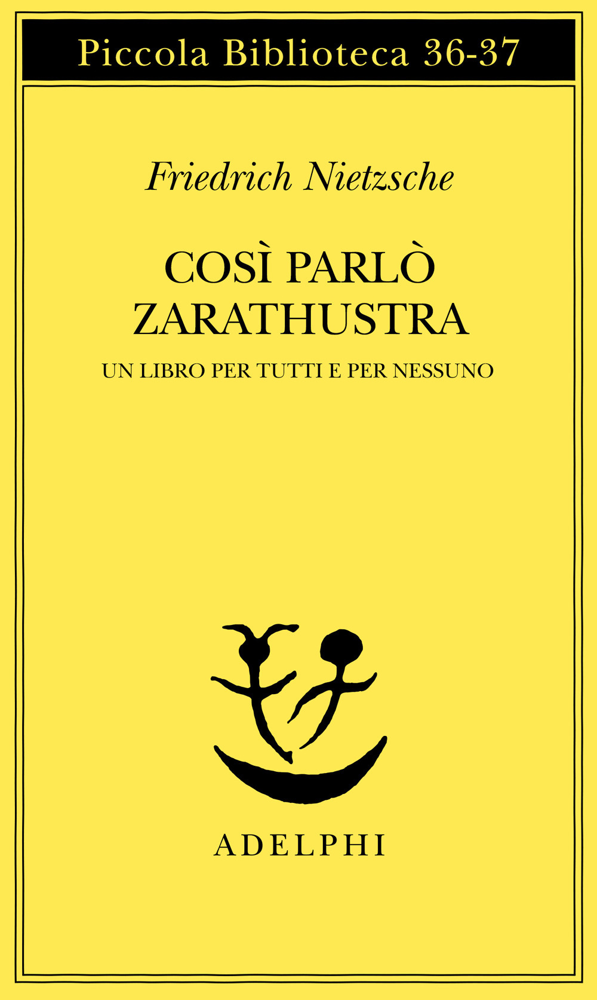

1:08:55 · 9 OPERE
Accompagnando gli ultimi tocchi della pendola di fine d'anno.
Il filo del discorso
L’ultimo contributo dell’anno rifiuta il bilancio degli avvenimenti e si concentra sulla continuità della storia: perché, pur con strumenti tecnici più potenti, ritornano errori di giudizio, violenza e subordinazione? Il relatore interpreta il presente come una regressione umana e culturale. È una sua valutazione, distinta da una misura scientifica delle capacità delle persone. La contrapposizione fra realtà fisica discreta e storia continua serve al suo discorso, senza costituire una definizione universale delle discipline. L’esempio di un incendio e il principio di Chesterton introducono il tema dell’autonomia, che non coincide con rifiutare istruzioni competenti o conservare ogni istituzione. La domanda sul prendere posizione porta al conflitto israelo-palestinese. Il relatore contesta una trasmissione non identificata e un sito australiano, probabilmente The Ethics Centre. Il testo originale individuato distingue però la scelta di principi universali dall’indifferenza morale: invita a giudicare le azioni di tutte le parti. Anche la negazione dello status di occupazione di Gaza dopo il 2005 non può essere dimostrata dalla sola assenza di truppe permanenti o dal loro successivo ingresso. Le fonti CICR richiamano il controllo effettivo; la scheda conserva la posizione del relatore senza assumerla come conclusione giuridica. Il consiglio di lettura centrale è il Diario di Witold Gombrowicz, secondo volume Feltrinelli, da un’annotazione del 1962. Lo scrittore discute L’uomo tra gli scorpioni di Czesław Miłosz, dedicato a Stanisław Brzozowski, e interroga l’illusione che l’avanzamento dell’intelletto cancelli ogni stupidità. Nel passo letto, proprio l’attività intellettuale può produrre discorsi non assimilati e una nuova forma di conformismo. La voce di Brzozowski, la lettura di Miłosz, la risposta ironica di Gombrowicz e l’attualizzazione del relatore restano distinte. Il lavoro del pensiero richiede esperienza personale e controllo delle fonti, senza trasformarsi nell’obbligo di possedere una teoria su tutto. Il richiamo a Heidegger e gli esempi scientifici insistono sulla differenza tra apparenza, ragionamento e prova. Cioran e Ceronetti sono evocati per il loro disincanto; le citazioni sono difese come gesto di responsabilità, mentre il presunto esperimento sulla sindrome del camionista resta senza fonte identificata. La controversia accademica del dicembre 2023 diventa poi il principale esempio polemico. L’articolo di Jason Riley è un’opinione; le dichiarazioni Harvard richiedono distinguere citazioni inadeguate, correzioni e criteri di scorrettezza della ricerca. Non è accertata qui una ridefinizione del plagio né un plagio dimostrato di tutte le pubblicazioni nominate. Le dimissioni di Liz Magill sono distinte da un licenziamento da ogni incarico. La parte finale torna alla critica sociale del dopoguerra. Il saggio di Marcuse sulla tolleranza ha bersagli più ampi dei soli nazisti, mentre Minima moralia e Descolarizzare la società sono richiami espliciti. Il relatore vede nell’ascolto mancato di questi autori un’occasione perduta e attribuisce responsabilità anche a chi tace. Le accuse politiche, i paragoni con il nazismo e i giudizi sulle persone rimangono attribuiti, senza diagnosi o equivalenze storiche automatiche. La chiusura collega la libertà del giudizio alla disponibilità ad apprendere e alla responsabilità della parola pubblica.
I libri nel discorso

The Thing (Why I Am a Catholic)
Identificazione probabile
Copertina della raccolta contenente The Thing: Ignatius Press, The Collected Works of G. K. Chesterton, vol.3,1990, ISBN 9780898703115
Dichiarata copertina della raccolta vol.3, insieme a The Catholic Church and Conversion, The Well and the Shallows e altri testi. Non implica che il relatore citi tutte queste opere né possieda tale volume. Data 1990 del prodotto ufficiale distinta dalla prima 1929. Non usata come immagine principale la sola tela verde con monogramma del catalogo 1930, poco identificabile visivamente.
Principio di Chesterton: non rimuovere ciò di cui non si comprende la ragione. Titolo non pronunciato: collegamento probabile a The Thing, capitolo The Drift from Domesticity, passo della recinzione riscontrato direttamente.
Passaggio 13:55 ↗ · Fonti e libro ↗
Problemi filosofici della scienza
Foto parziale del volume mostrato, da fotogramma a 896 s; edizione non determinata: Fotogramma nativo intero del filmato La filosofia è scienza (e la scienza è filosofia), a 896 secondi: fotografia del volume effettivamente mostrato, con titolo Problemi Filosofici della Scienza e autore Dr Divago leggibili. La mano copre parte inferiore/destra della coperta e alcuni segnalibri sporgono. Immagine parziale del volume nel suo contesto, non copertina editoriale autonoma, frontespizio o ricostruzione grafica. Nessun editore, ISBN o anno è leggibile; edizione della copia non determinata.
2011 deriva dalla bibliografia dell’autore e dalla presentazione in un altro contributo, non da questo fotogramma. L’immagine mostra anche il leggio e la lavagna; alcune zone della copertina sono coperte.
2083.54–2091.12 s, trascrizione automatica: Per questo io non ho un testo che si intitola Problemi filosofici della scienza, proprio; segue il riferimento all’analisi delle varianti di scala. Titolo riconoscibile ma negazione/pronomi sono fragili nella trascrizione automatica.
Passaggio 34:43 ↗ · Fonti e libro ↗
Che cosa significa pensare?
Identificazione probabile
Copertina: SugarCo · Tasco · edizione di riferimento
Heidegger e formula die Wissenschaft denkt nicht. Titolo non pronunciato: riferimento probabile del corso Che cosa significa pensare?, non una diagnosi di ignoranza di tutti gli scienziati.
Passaggio 35:34 ↗ · Fonti e libro ↗
Diario
Copertina: Il Saggiatore, volume unico di 928 pagine; traduzione Vera Verdiani, cura e introduzione Francesco M. Cataluccio.
Immagine autentica dell’opera, controllata visivamente; l’edizione di riferimento non è attribuita al filmato.
Diario, secondo volume Feltrinelli, annotazione del 1962, pagina 182 e seguenti sono riferimenti espliciti. Feltrinelli pubblica il secondo volume 1959–1969 con traduzione di Vera Verdiani.
Passaggio 37:00 ↗ · Fonti e libro ↗
Człowiek wśród skorpionów. Studium o Stanisławie Brzozowskim (L’uomo tra gli scorpioni)
Copertina di una successiva edizione polacca: Znak, Kraków,2002, ISBN 83-7006-955-X; note Andrzej Franaszek e Jerzy Illg
Edizione Znak 2002 distinta dall’originale parigino 1962. Il campo Data pierwszego wydania del catalogo si riferisce a questa edizione editoriale, non alla nascita dell’opera. Non attribuita al video una traduzione italiana o una copia polacca specifica.
L’uomo tra gli scorpioni, saggio di Miłosz su Brzozowski esplicito, attraverso la lettura del Diario. Originale polacco 1962 identificato; titolo italiano è resa orale, non edizione italiana attestata.
Passaggio 41:01 ↗ · Fonti e libro ↗
Così parlò Zarathustra
Identificazione probabile
Copertina: Adelphi · Piccola Biblioteca Adelphi · riferimento
Immagine associata all’ISBN di riferimento e controllata visivamente; edizione e traduzione non identificate come quelle citate o lette nel video.
Nietzsche e nutrire il pensiero del proprio sangue. Titolo non pronunciato: richiamo probabile a Della lettura e della scrittura di Zarathustra,.
Passaggio 47:24 ↗ · Fonti e libro ↗
La tolleranza repressiva
Identificazione probabile
Copertina: Mimesis · Minima / Volti · 2011 · Critica della tolleranza
Copertina dell’edizione italiana del saggio intitolata Critica della tolleranza, firmata dal solo Marcuse. Non è la raccolta Einaudi dei tre autori; nessuna edizione è attribuita al video.
Saggio di Marcuse sulle forze reazionarie e limiti della tolleranza. Titolo non pronunciato: collegamento probabile alla Tolleranza repressiva 1965; testo originale verificato, bersagli più ampi dei soli nazisti.
Passaggio 1:02:53 ↗ · Fonti e libro ↗
Minima moralia
Copertina: Einaudi, 2015
Adorno e Minima moralia espliciti nel richiamo all’evidenza logica e alla critica della cultura. Nessun aforisma numerato assegnato senza riscontro.
Passaggio 1:05:46 ↗ · Fonti e libro ↗
Descolarizzare la società. Una società senza scuola è possibile?
Copertina: Mimesis, collana Mimesis. Biblioteca, 2019, ISBN 9788857556321. Edizione italiana moderna di riferimento, non prima edizione dell’opera.
Immagine autentica dell’opera, controllata visivamente; l’edizione di riferimento non è attribuita al filmato.
Illich e Descolarizzare la società sono espliciti, come libro da discutere in un altro contributo. Il richiamo non equivale a una proposta di abolire ogni apprendimento.
Passaggio 1:06:15 ↗ · Fonti e libro ↗